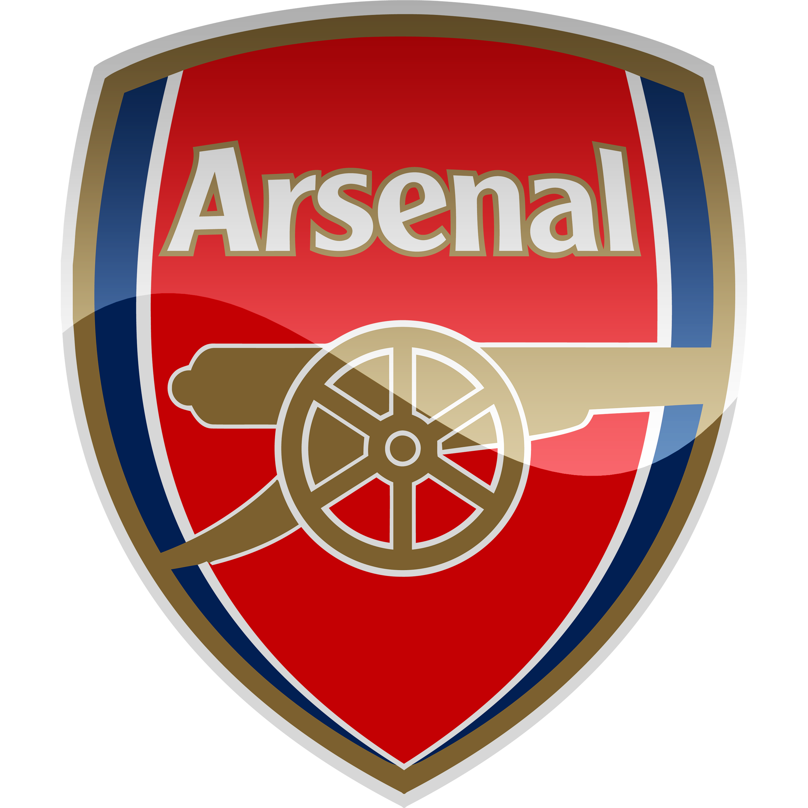

Strona poświecona Premier
League i "Big Six"

Arsenal Football Club
Rok założenia: 1886
Przydomek: The Gunners
Trener: Mikel Arteta
Strona klubu

Tottenham Hotspur Football Club
Rok założenia: 1905
Przydomek: The Lilywhites
Trener: José Mourinho
Strona klubu


Manchester United F.C.
Rok założenia: 1902
Przydomek: The Red Devils
Trener: Ole Gunnar Solskjær
Strona klubu